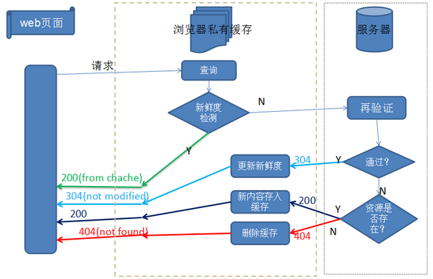

HTTP缓存
web缓存可以大致分为： 数据库缓存，服务器缓存（代理服务器缓存、CDN缓存），浏览器缓存
浏览器缓存也包含很多内容： HTTP缓存，indexDB，cookie，localstorage等等。
这里讨论HTTP缓存相关
为什么需要缓存？
1.冗余的数据传输 2.带宽瓶颈 3.瞬间拥堵 4.距离时延
浏览器请求静态资源的流程

术语
- 缓存命中率：从缓存中得到数据的请求数与所有请求数的比率。理想状态是越高越好。
- 过期内容：超过设置的有效时间，被标记为“陈旧”的内容。通常过期内容不能用于回复客户端的请求，必须重新向源服务器请求新的内容或者验证缓存的内容是否仍然准备。
- 验证：验证缓存中的过期内容是否仍然有效，验证通过的话刷新过期时间。
- 失效：失效就是把内容从缓存中移除。当内容发生改变时就必须移除失效的内容。
浏览器缓存主要是HTTP协议定义的缓存机制。HTML meta 标签，例如<META HTTP-EQUIV=”Pragma” CONTENT=”no-store”>
含义是让浏览器不缓存当前页面。但是代理服务器不解析 HTML 内容，一般应用广泛的是用 HTTP 头信息控制缓存。
HTTP头信息控制缓存
大致分两种：
强缓存： 如果命中缓存不需要和服务器端发生交互
协商缓存： 不管命中与否都和服务器端发生交互
匹配流程（已有缓存情况下）

- 强缓存
响应头中Expires/Cache-Control表明规则
在没禁用缓存且没超过有效时间的情况下，再次访问这个资源就命中了缓存 200 (from disk cache)
Cache-Control字段：
max-age、s-maxage(仅适用共享缓存)、public、private、no-cache、no-store
- max-age指定一个时间长度，在这个时间段内缓存是有效的，单位是s
- s-maxage同 max-age，覆盖 max-age、Expires，但仅适用于共享缓存，在私有缓存中被忽略。
- public表明响应可以被任何对象（发送请求的客户端、代理服务器等等）缓存。
- private表明响应只能被单个用户（可能是操作系统用户、浏览器用户）缓存，是非共享的，不能被代理服务器缓存。
- no-cache强制所有缓存了该响应的用户，在使用已缓存的数据前，发送带验证器的请求到服务器。不是字面意思上的不缓存。
- no-store禁止缓存，每次请求都要向服务器重新获取数据。
- 协商缓存
缓存的资源到期了并不意味资源内容有改变
客户端和服务器端通过某种验证机制验证当前请求资源是否可用缓存
浏览器第一次请求数据会把数据和响应头部的缓存标识存储起来，再次请求会带上存储的头部字段，服务器端验证是否可用
可： 304 Not Modified 不可： 200
——分割线——
-
Last-Modidfied/If-Modified-SinceLast-Modidfied：服务器资源的最后修改时间，响应头带上这个标识，第一次请求后浏览器记下这个时间，再次请求，头部带If-Modified-Since即为之前记录的时间 -
Etag/If-None-Match
由服务器端上生成的一段hash字符串，第一次请求的响应头带上Etag:abcd，之后的请求头带If-None-Match:abcd，服务器检查Etag
Expires vs max-age
都用于控制缓存的生命周期
Expires是过期的具体时间，例：Sun, 21 Mar 2020 08:52:13 GWT
max-age 是生命时长秒数
Etag vs Last-Modified
都用于对资源的验证
Etag 强验证，期待资源字节级别的一致
Last-Modified 弱验证，只要资源主要内容相同（允许例页脚广告不同）
实际运用
考虑缓存的内容
css样式
js文件
logo、图标
html文件
可以下载的内容不常改变的文件
max-age设置较大值 max-age=31536000常要变动的文件
Cache-Control: no-cache/max-age=0
比如入口index.html文件、文件内容改变但名称不变的资源。选择 ETag或 Last-Modified 来做验证，在使用缓存资源之前一定会去服务器端做验证，命中缓存时会比第一种情况慢一点点，毕竟还要发请求进行通信。
- 不应该被缓存
业务敏感的GET内容
最佳实践
缓存的意义就在于减少请求，更多地使用本地的资源，给用户更好的体验的同时，也减轻服务器压力。所以，最佳实践，就应该是尽可能命中强缓存，同时，能在更新版本的时候让客户端的缓存失效。
在更新版本之后，如何让用户第一时间使用最新的资源文件呢？机智的前端们想出了一个方法，在更新版本的时候，顺便把静态资源的路径改了，这样，就相当于第一次访问这些资源，就不会存在缓存的问题了。
伟大的webpack可以让我们在打包的时候，在文件的命名上带上hash值。
1 | entry:{ |
综上所述
- HTML： 使用协商缓存
- CSS&JS&图片： 使用强缓存，文件命名带上hash值
哈希值
- hash：跟整个项目的构建相关，构建生成的文件hash值都是一样的，只要项目里有文件更改，整个项目构建的hash值都会更改。
- chunkhash：根据不同的入口文件(Entry)进行依赖文件解析、构建对应的chunk，生成对应的hash值。
- contenthash：由文件内容产生的hash值，内容不同产生的contenthash值也不一样。
显然，我们是不会使用第一种的。改了一个文件，打包之后，其他文件的hash都变了，缓存自然都失效了。这不是我们想要的。
那chunkhash和contenthash的主要应用场景是什么呢？在实际在项目中，我们一般会把项目中的css都抽离出对应的css文件来加以引用。如果我们使用chunkhash，当我们改了css代码之后，会发现css文件hash值改变的同时，js文件的hash值也会改变。这时候，contenthash就派上用场了。
后台设置
浏览器是根据响应头的相关字段来决定缓存的方案的。所以，后端的关键就在于，根据不同的请求返回对应的缓存字段。 以nodejs为例，如果需要浏览器强缓存，我们可以这样设置：
1 | res.setHeader('Cache-Control', 'public, max-age=xxx'); |
如果需要协商缓存，则可以这样设置
1 | res.setHeader('Cache-Control', 'public, max-age=0'); |
#前端面试